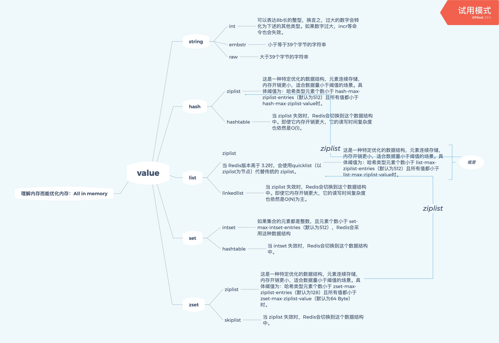
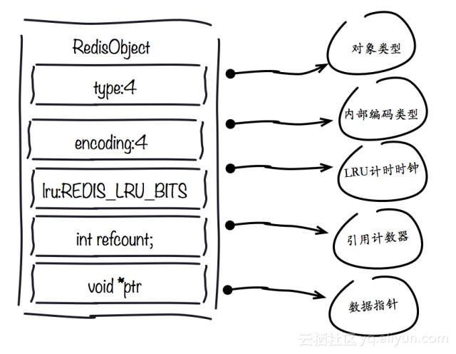
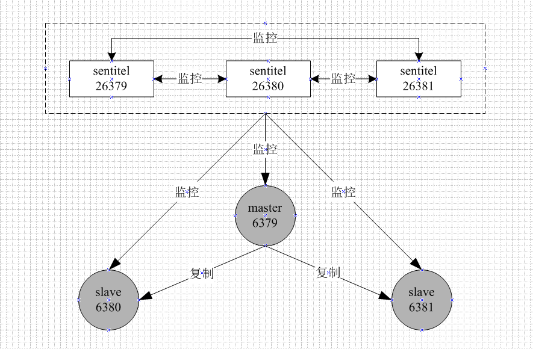
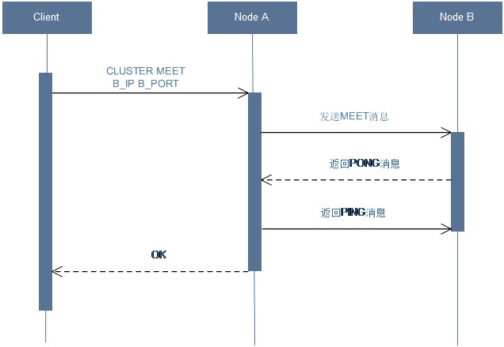
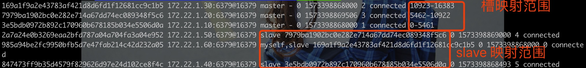

Redis 开发与运维
Redis 特性
Redis 高性能的原因
Redis 的读写性能达到 10w/s，主要基于以下原因：
- 数据主要放在内存中。
- Redis 使用距离 OS “层次更近”的 C 语言实现。
- Redis 使用单线程架构，没有很高的 lock contention。
- IO 多路复用技术
- Redis 的代码实现得优雅而兼顾性能
Redis 的数据结构
Redis 本身是 Remote Dictionary Server 的简称，其中，老的、常见的数据结构有：
- 字符串
- 哈希
- 列表
- set（集合）
- zset（有序集合）
但后来追加了几种新颖的数据机构，包括：bitmap、hyperloglog，更后来更添加了 GEO 地理信息相关的工具。
基于这些数据结构，我们可以实现一些常见的功能：
- 键过期，可以用来实现缓存，进而实现分布式锁。
- 发布订阅功能，进而实现消息系统（TODO）。
- Lua 脚本功能，可以实现自定义的 Redis 命令（TODO）。
- 实现简单的事务功能，能在一定程度上实现事务特性。
- 提供流水线功能，能够让客户端一次性把一批命令一次性上传到 Redis 里，能够合并 IO 并减少网络开销。流水线不同于事务特性，倒像是 batch。
redis 有一个很优秀的实现，不需要像 memcache 一样依赖于 libevent 之类的类库（TODO）。
Redis 应用场景
-
缓存：搭配使用自带的缓存（1）超时时间（2）最大内存控制加内存溢出后的淘汰策略（TODO），可以制造一个稳定的缓存集群。
-
排行榜（社交网络数据存储）（todo）：有序数据集合（sorted set）可以制造各种维度的排行榜。
-
计数器应用（社交网络数据存储）：不要使用 mysql 来制造 counter
-
其他社交网络数据存储：用 8 种数据结构可以比较合理地实现、存储各种社交网络里的踩、赞、粉丝、好友数据：Redis 自带比较丰富的集合操作。
-
消息队列系统：消息队列可以拿来做业务解耦，非实时削峰。Redis 有新的 pub/subscribe 和 blocking queue 功能。
Redis 不适合的应用场景
Redis 本身是热存储为主，应该存热数据为主，应该尽量区分热数据和冷数据，把冷数据排出在热数据之外，这样才能合理地提高内存利用效率。
对于食品网站，视频信息是跨业务线的热数据，而每个电视剧的观众信息，则是偏冷的数据。
Redis 本身不支持传统关系型数据库复杂的 CRUD 复杂查询语句，更不适合 OLAP 场景。
关于 Redis 我们不知道的事情
不要只把 redis 当做 get、set、del 的黑盒，开发和运维同样重要。
Redis 的性能黑洞
- keys 是读操作负荷非常重的操作，不适合对成千上万个键进行操作。
- KEYS 命令会遍历所有键，时间复杂度为 O(N)，N 为键的总数
- Redis 是单线程模型，KEYS 命令执行期间会阻塞其他命令-大 key、长命令都有类似的问题
- 匹配到的结果会一次性返回，占用大量内存
1 | |
- rdb dump 本身对于写操作量很大的集群，是一个很容易让进程 hang 住的操作。
toolkit
redis-server
常用的配置文件内容：
- port 一般是 6379
- logfile 日志文件（redis 的日志文件和 Kafka 不一样，和存储文件是分离的）
- dir Redis 工作目录（存放持久化和日志文件）
- daemonize 是否以守护进程的方式来启动 Redis
redis 的 minor 版本号如果是奇数，则含有实验性 feature 的非稳定版本；如果是偶数，则是稳定版本。所以我们应该在生产环境使用偶数版本，而在实验性环境里使用奇数版本。
redis-cli
cli 有两种工作形式：interactive 和 non-interactive。
使用 redis-cli 关闭 redis 的时候，redis 会做优雅关闭的操作，优雅关闭主要包括：
- 断开客户端连接。
- 存储数据到 rdb 文件。
所以要尽量用 shutdown 命令，而不要直接 kill-大部分的devops场景下我们是不应该kill一个集群的，这会让线上服务降级。
redis-benchmark
基准测试工具
redis-check-aof
AOF 持久化文件校验和修复工具
redis-check-rdb
redis RDB 持久化文件检测和修复工具
redis-sentinel
启动 redis 哨兵
其他 redis 模块
neural-redis Online trainable neural networks as Redis data types. 把可训练的神经网络作为 Redis 的数据类型。
RediSearch Full-Text search over Redis 在 Redis 之上的全文本搜索引擎
RedisJSON A JSON data type for Redis Redis 的 Json 数据类型
rediSQL A redis module that provide full SQL capabilities embedding SQLite 通过嵌入 SQLite 提供全 SQL 支持能力
redis-cell A Redis module that provides rate limiting in Redis as a single command. 支持在 Redis 中一键限流。
RedisGraph A graph database with a Cypher-based querying language using sparse adjacency matrices 一个使用基于密码的 使用稀疏邻接矩阵查询语言的图数据库
RedisML Machine Learning Model Server 机器学习模型服务器
RedisTimeSeries Time-series data structure for redis Redis 的时序数据库
RedisBloom Scalable Bloom filters Redis 的可伸缩的布隆过滤器
cthulhu Extend Redis with JavaScript modules Redis 的 JavaScript 模块
redis-cuckoofilter Hashing-function agnostic Cuckoo filters. 哈希函数的不可知布谷过滤器（？）
RedisAI A Redis module for serving tensors and executing deep learning graphs 一个提供张量和执行深度图的 Redis 模块
redis-roaring Uses the CRoaring library to implement roaring bitmap commands for Redis. 使用 CRoaring 库实现 Redis 的 roaring 位图命令
redis-tdigest t-digest data structure wich can be used for accurate online accumulation of rank-based statistics such as quantiles and cumulative distribution at a point. 一个可以被用来精确累积基于排名的统计（诸如分位点或者某一个点的累积分布）的 t 摘要数据结构
Session Gate Session management with multiple payloads using cryptographically signed tokens.
使用密码学签名的令牌的多重负载的会话管理
countminsketch An apporximate frequency counter
一个近似频率计数器
ReDe Low Latancy timed queues (Dehydrators) as Redis data types. 低延迟的计时队列
topk An almost deterministic top k elements counter
一个有确定性的 topk 元素计数器
commentDis Add comment syntax to your redis-cli scripts.
redis 客户端的评论语法
数据结构和内部编码
如前文所述，Redis 自带数据类型包括：string、hash、list、set 和 zset，但它们实际上只是 redis 的外部数据类型。Redis 还自带一套内部的编码实现，可以通过以下命令查询键的实际内部编码类型：
1 | |
1 | |

redis的数据结构和内部编码.xmind

redis的数据结构.xmind
Redis的列表和哈希表都是采用链表结构实现的。而有序集合则采用了跳跃表(Skip List)这种高效的数据结构。
这些数据结构都经过了精心设计和优化，以满足各种场景下的应用需求。例如，链表结构适合频繁地添加和删除元素，而跳跃表结构则适合排序和查找。
ziplist 对复杂数据结构几乎是万能的。他的特点是比较节省内存，但在数据元素较多的情况下性能比较容易下降。
常用命令

全局命令
查看所有键
1 | |
这个命令会不加区别地，**做全局的键扫描，返回且只返回键。**它的时间复杂度是O（N），线上环境因为无法预测键的数量，应该禁用这个命令。
1 | |
while((de = dictNext(di)) != NULL)这个遍历操作的时间复杂度是最高的。- 整个请求没有使用类似
键总数
1 | |
这个操作的性能是 O(1)，也就意味着可以直接被线上使用。
它可以作为查询全部数据以前的预优化，至少全局的记录数量可以预先提取出来，以获得分页查询的依据。
检查键是否存在
1 | |
如果存在返回 1，不存在返回 0。
Redis 的 API 倾向于返回数字而不是布尔值：在存在多个候选返回值的时候，redis会返回语义更加丰富的返回值。如返回成功或失败，可以直接返回true或false，但返回0既可以表示失败，也可以表示操作的操作数（operand）为0，而返回非0不仅可以告诉我们操作成功了，而且还会精确地告诉我们操作了多少个对象，可谓一举两得。这种设计思路遍布 Redis API 中。
问题：估计有个全局优化，能够不返回具体值的情况下确认是否存在某个 key。
删除键
1 | |
如果删除成功则返回 1，否则返回 0
键过期
1 | |
set 是为比较少的返回“OK”的 command。
因为这个命令有复合的EX、PX、NX、XX等选项，所以其他相对的命令（如SETNX）可能会被设为过期，且被移除。
expire 命令的结果也是 0 和 1。在 redis 中，最早支持的时间单位为second，如果不特别指定单位，指定时间时数字都代表秒。这个策略可以推广到其他系统里。美团的 redis 系统里面的默认时间单位就是秒。如果值是负数，键会立即被删除。
如果使用了 expire 命令，还有一个可以拿来轮询的 ttl 命令，可以告诉我们键的剩余时间：
1 | |
键的数据结构类型
1 | |
字符串命令
设/取值
1 | |
批量设/取值
1 | |
如果使用平凡的取/设值命令，时间开销为：
总开销= n * (一次网络开销 + 一次操作开销)
如果使用批量取/设值命令，时间开销为：
总开销= 一次网络开销 + n * (一次操作开销)
redis每秒可以处理上万的读写操作，相当于每次读写操作的开销小于0.1毫秒，而网络开销很难低于1毫秒。根据阿姆达尔定律，网络开销的减少才是性能优化的大头。
加/减值
因为 Redis 本身是单线程架构，所以本身不需要其他设计中的悲观锁或者 cas 操作保证操作正确性。
返回的自增结果永远是正确的。
1 | |
注意，java里涉及数字的缺省值都是0，而且只是缺省值，并不是终值。
位操作命令
背景见：https://redis.io/topics/data-types-intro#bitmaps
Redis 并不只是一个平凡的 kv 数据存储，而是一个拥有许多数据类型的服务器。其中有一种类型是用 String 来解释为位图-“Bitmaps are not an actual data type, but a set of bit-oriented operations defined on the String type”。字符串是safe blobs，最大长度是 512 MB，恰好等于一个2的32次方的位图。字符串的英文字符，都符合（comply to）ascii编码。
所谓的位图，可以用紧凑的方式来表示一个大的 true/false 值域，而且这个 true/false 的点还带有 position 信息。
1 | |
其他命令
1 | |
哈希命令
设/取值
1 | |
注意，len 往往是计数，而 strlen 往往是计值。
批量设/取值
1 | |
对于mset的升级，就是把数据结构写在最前头。set -> mset -> hmset。
数值操作
1 | |
其他操作
1 | |
列表命令
增删操作
1 | |
redis里涉及区间的 end，都是闭区间的 end。
阻塞操作
1 | |
集合命令
增删操作
1 | |
集合操作
1 | |
有序集合命令
增删操作
1 | |
集合操作
1 | |
键管理
单个键管理
1 | |
注意，如果字符串的value为string类型，set 操作也会去除过期时间。
Redis不支持二级数据结构（例如列表或者哈希）里元素的过期时间。
迁移键
1 | |
遍历键
1 | |
keys命令本身很容易阻塞redis节点，在以下情况下可以考虑使用：
- 在不对外服务的从节点上使用。但会影响主从复制。
- 如果确认键值总数比较少，可以使用以下命令
其他情况下，应该考虑使用 scan 命令，渐进式地遍历所有键。
scan的模式为： scan cursor [match pattern] [count number]
其中 cursor 是必须的，从0开始，到0又结束，周而复始。count 默认为10。
1 | |
数据库管理
关系型数据库用字符来区分不同的数据库名不同。Redis只是使用数字来区分不同的数据库。
Redis 默认拥有16个数据库，默认选中的数据库的 dbindex 是0。
1 | |
未来的 redis-cluster 功能默认只使用 db 0。不同的db之间的数据（KV）是相互隔离的。但用不同的 redis instance 一样可以实现这个效果。
1 | |
Redis小功能
慢查询
命令执行的典型过程
- 发送命令
- 命令排队
- 命令执行
- 返回结果
慢查询值统计 step3 的执行时间，即使没有慢查询，客户端也可能超时。
阈值参数
相关的阈值参数分别为：slowlog-log-slower-than和slowlog-max-len。
1 | |
查询结果
- (integer) 7
- (integer) 1570264725
- (integer) 7
-
- “SLOWLOG”
- “get”
- “0”
- “127.0.0.1:49802”
- “”
慢日志的格式为：
1 慢日志id
2 日志发生的时间戳
3 命令耗时
4 命令详情
5 客户端地址
6 客户端的名称
参考：https://redis.io/commands/slowlog
最佳实践
1 调大 slowlog-log-slower-than 到1毫秒左右，可以保证 1000 的QPS（实际上在单台 mac pro上的 rps 可以达到接近10万）。
2 调大 slowlog-max-len，并定期把其中的数据取出来存入其他存储层。
3 如果发生客户端超时，注意对照相应的时间点，注意查看是不是存在慢查询导致级联失败。
Redis Shell
redis-cli
1 | |
redis-server
1 | |
redis-benchmark
1 | |
pipeline
如上所述，Redis 命令执行流程是：
- 发送命令
- 命令排队
- 命令执行
- 返回结果
1+4 的耗时统称为RTT（Round Trip Time，往返时间）。
当我们把多个命令合并到一个 RTT 里的时候，可以使用 pipeline。
原生批量命令和 pipeline 的差异是：
- 原生批量命令是原子的，pipeline 是非原子的。
- 原生批量命令是一种操作针对多个 key，而 pipeline 是更高层的组合，一个流水线组合多个批量命令。
- 原生批量命令只靠 Redis 服务端即可实现，pipeline 需要服务端和客户端共同实现。
注意，pipeline 是一种批量发送命令的客户端工作模式，需要关注的是它只是对命令的组合：
1 | |
事务
Redis 支持简单的事务（multi-exec）以及 lua 脚本。
简单事务（multi-exec）
一个基本的例子
1 | |
放弃提交（而不是回滚）的例子：
1 | |
被 queue 的命令因为被抛弃所以没有被执行。
除此之外，**如果命令本身有语法错误，如把 set 写成了 sset，可以在 queue 的时候被检测出来，则事务整体都不会被执行。**我们只能得到 EXECABORT 错误。
1 | |
但是，如果命令本身有运行时错误，比如对错误类型的value 进行了错误的操作（对 list 执行了 zadd 操作），则已经执行成功的命令是不会被回滚的！
1 | |
上面的操作本身会部分操作成功。可见 Redis 虽然声称这个特性是一个 transacion，但并不具备标准的数据库事务的原子性。
不会回滚是这种工作模式的局限。
乐观锁
在 Redis 中使用 watch 命令可以决定事务是执行还是回滚。一般而言，可以在 multi 命令之前使用 watch 命令监控某些键值对，然后使用 multi 命令开启事务，执行各类对数据结构进行操作的命令，这个时候这些命令就会进入队列。
当 Redis 使用 exec 命令执行事务的时候，它首先会去比对被 watch 命令所监控的键值对，如果没有发生变化，那么它会执行事务队列中的命令，提交事务；如果发生变化，那么它不会执行任何事务中的命令，操作结果就是 nil。

1 | |
我们也可以使用事务来获取多重结果：
1 | |
一点额外的结论
1 | |
多个命令的写入在客户端就好像执行了一样，exec 才是把排队的命令结束。这也就意味着，这个事务的用法不是一个 func，而是一个类似普通事务的“起-止”边界模式。它的缺点是，它无法在执行出错的时候触发前面的执行结果的回滚。
Lua
Redis 提供 eval 和 evalsha 两种方法来调用 Lua 脚本。
lua 脚本拥有以下优点：
- 可以提供原子执行的能力，执行过程中不会插入其他命令。
- 可以提供自定义命令的能力。
- 可以提供命令复用的能力。
我们可以自由建模，然后打包一个组合脚本进行组合之间的运算-所以可以组合使用各种原子 API 来实现复杂计算。
eval
1 | |
call 如果遇到错误，则脚本执行会返回错误。如果需要忽略错误执行，需要使用 pcall。
除了 redis.call 以外，还可以使用 redis.log 来把日志打印到 redis 的日志文件里，但要注意日志级别。
如果脚本比较长，可以考虑使用外部文件，配合 --eval 选项来执行。
Redis 的高版本里自带 lua debuger。
evalsha
这个功能可以实现 lua script 的复用，其基本流程为：
- 将 lua 脚本加载到服务器端，得到脚本的 sha1 指纹。
- evalsha 可以使用 sha1 指纹来复用脚本，避免重复发送脚本到服务器端的开销。
1 | |
管理 lua 脚本
1 | |
位图
详细的用法见位操作命令。
它的用例比较有意思，一个典型的用例是，统计一个大型社交网站的所有成员的具体登录信息。我们可以统计每天都产生了多少登录，最小的登录 id 是什么，最大的登录 id 是什么。但位图也不是万能的，如果位图很稀疏，则不如转为一个 list 或者 set 会更省内存-这需要做内存测试。
HyperLogLog
HyperLogLog 并不是新的数据结构，而是字符串与基数算法（cardinality algorithm）的结合。
1 | |
HyperLogLog 本身极省内存，但数据量变大后，pfcount 会变得不准，最多有 0.81%的失误率。
1 | |
HyperLogLog 具有以下特点：
- 不能取出存入数据。
- 计数不准，近似准确。
- 极省内存。
在现实之中，bitmap、HyperLogLog和传统的 set 可以视场景交替使用或者配合使用。比如 bitmap 标识哪些用户活跃，hyperloglog计数。
发布（publish）/订阅（subscribe）
在老版本的 Redis 里，开发者可以通过 list 这一数据结构来模拟消息队列中间件，但后来 Redis 提供了发布订阅功能。这一功能清晰地解耦了发布者和订阅者，两者不直接通信，发布者客户端）向指定的频道（channel）发布消息，订阅该频道的客户端都可以收到该消息。
1 | |
值得注意的亮点分别是：
- 客户端在执行订阅命令后就进入订阅状态，只能接收 subscribe、psubscribe、unsubscribe 和 punscribe 四个命令。
- 新开启的客户端，无法收到该频道之前的消息，因为 Redis 不会对发布的消息进行持久化。–消息既无法堆积（accumulate），也无法回溯（backtrace）。
GEO（地理信息定位）
Redis 的 GEO 可以用来实现诸如附近位置、摇一摇这类依赖于地理位置信息的功能。
1 | |
此外还可以对 geo 集合的成员求geohash。
1 | |
- geohash 的长度越长，精度越精确。
- 两个 geohash 越相似，距离越近。
客户端
Redis 协议
Redis 的客户端和服务器端使用 TCP 直连，基本的协议都是一问一答（request and response） 形式的。但它发送的请求是遵循特定的应用层协议（Redis Serialization Protocal）的。
一个请求如下：
1 | |
*3代表 3 个参数（SET KEY VALUE）。 $3 代表紧随其后的参数长度为 3 字节。 每一段可见字符都必须以一个CLRF(\r\n)结尾。
而返回值也有格式：
状态回复，在 RESP 中第一个字节为“+”。 错误回复，在 RESP 中第一个字节为“-”。 多条字符串回复，在 RESP 中第一个字节为“”。 整数回复，在 RESP 中第一个字节为“:”。 字符串回复，在 RESP 中第一个字节为“$”。 多条字符串回复，在 RESP 中第一个字节为“”。
Jedis 客户端
使用的时候要注意配上 try-finally 块，小心连接泄漏。 也可以使用连接池，也要注意规划，连接池一样可以造成连接泄漏。
客户端管理
1 | |
redis 服务端为每个客户端分配一个输入缓冲区（默认大小为 1G，而且不受 maxmemory 的限制）。输入缓冲区满了以后，客户端可能会被关闭。
与客户端相关的几个参数：
- tcp-keepalive 默认值为 0，即 Redis 不检查死连接。如果设置为 60，则 Redis 会定期清理死连接，防止僵尸连接占用资源。
- tcp-backlog tcp 接受连接的总数的大小，默认值为 511。这个值也受 OS 的内核参数控制，可以修改/proc/sys/net/core/somaxconn。
监控内存过大的思路
消耗的内存如果接近了 maxmemory，则可以按照以下步骤来排查问题：
- 确认各个主从节点的 dbsize 是否一样。
- 使用
info clients来输出内存消耗信息，确认输入输出缓冲区的大小。 - 使用
redis-cli client list | grep -v "omem=0"查找消耗内存比较多的 client。 - 检查是否有慢查询-注意查询 slowlog，或者遇到 slowlog 的时候直接报警。
持久化
持久化可以避免进程退出而数据丢失。
Redis 的持久化文件主要包括两种格式，RDB 格式和 AOF 格式，这两种格式的生成机制各有不同。
Redis 在重启时优先加载 AOF 文件（因为 AOF 文件颗粒度更细），如果没有 AOF 文件可加载则加载 RDB 文件。

RDB
RDB 持久化会把进程内的数据全量快照保存到硬盘上，其触发方式包括手动触发和自动触发。
手动触发
1 | |
bgsave 的工作流程如下：

注意，RDB 文件本身永远只有一个。子进程产生的都是临时文件，会通过原子替换的方式来维持 RDB 文件的唯一性。
Redis 内部主动生成 RDB 文件的过程都是采用 bgsave 的方式。
自动触发
- 在 config 里配置
save m n。表示 m 内数据集存在 n 次修改时，自动触发 bgsave。 - 如果从节点执行全量复制操作，主节点自动执行 bgsave生成 RDB 文件并发送给从节点。
- 执行 debug reload 命令重新加载 Redis 时，也自动触发 save 操作。
- 默认情况下执行 shutdown 命令时，如果没有开启 AOF 持久化功能，则自动执行 bgsave-Redis 自带的优雅关闭流程。
RDB 文件的存储
默认会存在 config set dir {newDir}和config set dbfilename {newFileName}的文件里。也可以动态修改（）比如在硬盘出问题的时候动态修改）。
默认情况下会对 RDB 文件进行 LZF 压缩处理（可以关闭）。压缩会消耗 CPU 性能，但利于网络传输。
RDB 的优缺点
优点：
- 紧凑存储，适于全量保存/恢复。
- 加载 RDB 的速度远快于 AOF 文件。
缺点：
- 没有办法强实时/秒级持久化。
- 版本不兼容
AOF（append only file）
以独立的日志（log）记录每次写命令，重启时再重新执行 AOF 文件中的命令达到恢复数据的目的。AOF 具有持久化的强实时性，是 RDB 的补充。
配置方式
需要设置appendonly yes（默认不开启），开启后就会被自动触发（也就是说无需手动触发）。可以修改文件名和路径。
工作流程
aof 的工作流程如下：

其中：
- append 其实是把写命令写入 aof_buf 中。
- sync 是把写入命令从内存持久化到硬盘中。
- rewrite 则会压缩重写 AOF 文件使其达到更紧凑的目的。
- 当 Redis 重启后，可以加载 AOF 文件进行数据恢复。
其中被持久化的命令，是纯文本的格式，遵循 RESP 协议。
文件同步
Redis 本身是个单线程架构，如果每次新的写命令都要写入硬盘，则硬盘的负载能力可能成为一个瓶颈。而如果先写入一个 aof_buf，则可以采取多种策略持久化数据到硬盘中。
这提醒我们，对于零散的多次写 IO，我们都要想办法化零为整，通过 buffer-sync 的分段异步写形式充分协调内存和硬盘的写性能。
我们可以采用的策略分别是：
- always 命令写入 aof_buf 后调用系统 fsync 操作同步到 AOF 文件，fsync 完成后系统返回。等于一个强实时的策略。在 sata 上只有几百的 tps。
- everysec 命令写入 aof_buf 后调用系统 write 操作，write 完成后线程返回。fsync 操作由专门线程每秒调用一次。等于一个中等实时的策略。默认策略，最多丢失 1s 的数据
- no 命令写入 aof_buf后调用系统 write 操作，而不对 AOF 做 fsync 同步操作， fsync 同步操作由操作系统负责，通常同步周期最长 30 秒。无法保障同步实时性。
write 其实是一种 delaywrite，写入操作系统的页缓冲区以后线程会立即返回（阻塞期很短），依赖于系统的调度（如时间阈值满或者空间阈值满，期间如果系统宕机则数据会丢失）或者 fsync才能真正持久化到硬盘中。
fsync 就是强行同步到硬盘的syscall，阻塞时间会稍长，但持久化更彻底。
重写机制
重写主要通过有效地去除无用命令、合并多条有效命令的方式使得 AOF 文件变得更小，更利于加载。
重写（只是重写这个过程）也同样包括手动触发和被动触发两种机制。
重写流程：

其中同时存在两个 aof 文件，新的 aof 文件也会进行一个原子替换。
手动触发
1 | |
自动触发
if (aof_current_size > auto-aof-rewrite-min-size && (aof_current_size - aof_base_size)/aof_base_size >= auto-aof-rewrite-percentage)
auto-aof-rewrite-min-size 和 auto-aof-rewrite-percentage 是配置文件的配置项。
相关问题
fork 问题
fork 调用会让子进程调用父进程的内存页表，理论上一个进程占用内存越大，它的 fork 命令就越耗时，而且有些虚拟机（如 xen）里 fork 的性能还更差。
性能优化点
cpu
- 不要和其他 cpu 密集型应用部署在一起。
- 如果部署多个 Redis 实例，保证每个时刻只有一个后台进程在工作。
内存
- 如果部署多个 Redis 实例，保证每个时刻只有一个后台进程在工作。
- 不要增加 copy-on-write 的负担，尽可能让子进程少一些后台重写的负担（如何做到？）。
- 关掉大页（huge page）优化-和 JVM 的优化策略正好相反。
硬盘
AOF 对硬盘的写压力更大。
AOF 追加阻塞
此外，AOF 体系还存在一个追加阻塞的问题，其流程如下：

可以看到，主线程如果在写入 AOF 缓冲区时如果上次 fsync 成功的时间（所谓的 checkpoint）还在两秒内，则会持续写入 AOF 缓冲区。这时候 AOF 缓冲区是不安全的。所以实际上 AOF 机制最多会丢两秒内的信息。而如果主线程阻塞，则 Redis 的性能会急剧下降。
至此为止，我们至少以下潜在的性能瓶颈：save、fork、 AOF 的 append、AOF 的 fsync 造成的阻塞。
复制
在分布式系统中为了解决单点问题，必须建立副本复制机制，以解决容灾和负载均衡问题。

配置
建立复制
建立复制共有三种方法：
- 在配置文件中使用如下的配置：slaveof localhost 6379
- 在启动时使用如下命令：redis-server --slaveof localhost 6379
- 在 redis-cli 中对服务端使用 slaveof localhost 6379
而在主节点里可以查看自己的主从信息：
1 | |
可以看到自己的角色：
role:master
而从节点则会看到：
role:slave
断开复制
可以使用如下命令断掉与 master 的联系：
1 | |
- 本节点断开和 master 的连接。
- 本节点自己上升为 master。
也可以使用如下命令切换 master：
1 | |
如果新 master 不同于老 master，老 master 的数据会被清理掉。
安全性
主节点可以设置 requirepass 参数进行验证，这时所有的客户端访问必须使用 auth 命令进行校验。
只读
从节点（默认）使用 slave-read-only = yes 来保证从节点是只读模式的。在生产上最好保持这种不能允许从节点写的模式，否则会导致数据不一致。
传输延迟
关闭 repl-disable-tcp-nodelay 可以降低延迟，但整体带宽使用比较大。
拓扑
一主一从

这种思路是把 slave 当做 standby，只在从节点打开持久化（RDB 或 AOF）。这种场景如果主节点重启，则主节点会自动清空数据（因为没有打开持久化-实际上如果没有打开 AOF 持久化，Redis 的优雅关闭也会回退到 RDB 持久化），从节点也可能清空数据。为了预防这种情况出现，在主节点重启以前从节点要slaveof no one断开主从复制-但这种措施无法阻挡主节点宕机引起的数据丢失。
这种一主一从的架构设计和 MySQL 的主从复制很相似，但只打开一端持久化的思路还是比较特别的，不那么安全。而且主节点 flush 数据会导致从节点也 flush 数据，本身也是一种很危险的行为
一主多从

这种拓扑又被叫做星形拓扑。这种拓扑比较像 MySQL 的读写分离设计，主节点承担写命令的操作，而从节点也分担读命令的操作，。其中还可以设计一些特殊的读节点，专门执行 keys，sort 操作。但这种操作会占用太多的网络带宽。
树状结构

这种树形架构通过分层架构来分层放大流量，平衡了带宽和冗余复制的需要，但下层的节点的同步时延变大了。
原理


过程
1 如果使用配置文件配置主从关系，这一步几乎可以说是一闪而过。这一步只保存 master 的 ip 和 port 。如果这个时候从 master 节点去看 client 信息的话，会看到一个刚刚建立的 client（从主节点的角度来看，从节点实际上也是client，类似某些 kafka 的数据迁移方案迁移的端点把自己伪装成一个 consumer）。
2 从节点内部有个每秒运行的定时任务（大致上是一个定时线程）维护复制相关逻辑，当定时任务发现新的主节点后，会尝试与该节点建立网络连接。从节点会单独打开一个 port（而不是当前从节点的 server 的 port），尝试建立新的 socket。所以 Redis 的主从复制的连接建立是一个拉过程。
34020:S 06 Oct 2019 23:09:28.709 * Connecting to MASTER localhost:6379
34020:S 06 Oct 2019 23:09:28.712 * MASTER <-> REPLICA sync started
这个过程如果失败，可以在日志中看到以下错误：
34020:S 06 Oct 2019 23:09:38.086 * MASTER <-> REPLICA sync started
34020:S 06 Oct 2019 23:09:38.086 ## Error condition on socket for SYNC: Connection refused
从节点会无限重试，直到成功或者主从关系被切断为止。
3 从节点会发送 ping，验证：
- 连接的 socket 是否正常
- 主节点是否能正确响应命令
如果验证成功，能收到：
Master replied to PING, replication can continue…
4 权限验证 如果 master 配置了 requirepass 参数的话，从节点要配置 masterauth 参数来保证密码一致。
5 同步数据集 分为全量同步和部分同步两种策略。
6 命令持续复制 数据集同步完成后。主节点会把自己收到的写命令，持续发给从节点。
同步数据集
注意，全量复制和部分复制都属于同步数据集的一部分，后续的写命令持续发送不是部分复制。
全量复制（Full resync）
在初次复制的场景下，Redis 会使用全量复制策略（对应 Redis 旧版本唯一用于复制的 sync 命令）。主节点的数据会被一次性全部发送给从节点，造成主从节点和网络的很大开销。
一般从节点会打印如下的日志：
34020:S 06 Oct 2019 23:09:39.128 * MASTER <-> REPLICA sync started
34020:S 06 Oct 2019 23:09:39.128 * Non blocking connect for SYNC fired the event.
34020:S 06 Oct 2019 23:09:39.128 * Master replied to PING, replication can continue…
34020:S 06 Oct 2019 23:09:39.129 * Partial resynchronization not possible (no cached master)
34020:S 06 Oct 2019 23:09:39.130 * Full resync from master: 3e6a48b3ce0d87851c0882f4120145a0d7611f0d:0
34020:S 06 Oct 2019 23:09:39.181 * MASTER <-> REPLICA sync: receiving 175 bytes from master
34020:S 06 Oct 2019 23:09:39.182 * MASTER <-> REPLICA sync: Flushing old data
34020:S 06 Oct 2019 23:09:39.182 * MASTER <-> REPLICA sync: Loading DB in memory
34020:S 06 Oct 2019 23:09:39.182 * MASTER <-> REPLICA sync: Finished with success
证明了部分复制不可能，必须打开全量复制。注意PID 34020:S意味着当前 节点是个 Slave（M意味着 Master 而 C 意味着子进程）。
其全流程如下：

注意：
- 主节点和从节点之间的复制超时时间一般为 60s，如果数据量很大要调高这个超时阈值，否则从节点会放弃全量复制。- 不要复制太大的数据量！否则就要调高超时
- 主节点在生成 rdb 的过程中，还在不断接受新的命令（因为 bgsave 是由子进程进行操作的），这些新的命令会被保存在一个单独的客户端复制缓冲区里面（注意，和部分复制的replication-backlog 不一样，这里的 buffer 属于未被发送的命令的 buffer）。在 send RDB 以后还要单独再 send buffer 一遍。
- 从节点得到了一个完整的 RDB 文件以后要先 flush old data，然后再进行 load，这个全过程都是阻塞的-这也是 MySQL 不具有，Redis 独有的。
- 如果从节点自己开启了 AOF 功能，为了保证同步完成以后 AOF 文件立刻可用，先启动一段 bgrewriteaof，子进程 rewrite 完成以后全量复制才算收尾-增加了阻塞点。
- 全量复制过程中，子节点的数据可以算是 stale 的。如果关闭了 slave-serve-stale-data，则全量复制过程中从节点是不接受读命令的（写命令更加不会被接受），属于完全阻塞状态。
部分复制（partial replication）
在出现网络闪断等情况时，主节点可以只发送一部分数据给从节点以弥补丢失，效率会很高。
普通的主从建立时，会出现若干次部分复制失败的日志，最终会直接通过全量复制成功-Redis 会优先考虑部分复制的策略。
psync命令需要组件支持以下特性：
- 主从节点各自复制、保存偏移量
- 主节点复制积压缓冲区
- 主节点运行 id
复制偏移量
主节点在自己完成写入后，会累加并保存自己的本地 offset。从节点每次完成复制后，也会上报自己的 offset 到主节点中。所以主节点保存了所有节点的偏移量。
而同步了写命令后，从节点也会累加并保存自己的 offset。
对比主从节点的 offset 的差值可以知道复制延迟多大，从而判定系统健康程度。
复制写命令到复制积压缓冲区
Redis 会针对每个 client 准备一个固定长度的队列- replication-backlog，默认大小为 1mb 作为复制积压缓冲区。所有写命令在被发送给从节点的同时，也会被发送到这个队列里。这个队列实际上记录了已被复制的命令，可以作为日后补偿部分丢失写命令的依据。
注意，这个缓冲区是已被发送的命令数据的缓冲区，只是为了重放闪断数据用的，和全量复制里的 send buffer 用到的 buffer，也不保存复制完以后持续同步的后续命令。
主节点运行 id
每个 Redis 节点都会有一个 40 位的 16 进制字符串来唯一识别节点。
如果主节点重启（必然？）替换了 RDB/AOF 文件（比如两种文件的重写？）的时候会导致节点 id 变化，从节点已经不适用老的 offset， 从节点会重新进行全量复制。-所以尽量不要随便重启主节点
psync 命令
psync 命令要求 Redis 2.8 以上版本，它同时兼容全量复制和部分复制。
其格式如下：
1 | |
runId 为待复制的主节点 id，offset 为已复制的数据偏移量（如果是全量复制，其值为-1）。
从节点发送 psync 命令给主节点，主节点回复不同内容的响应给从节点：
- FULLSYCN {runId} {offset} 从节点将开始全量复制
- +CONTINUE 从节点触发部分复制
- +ERR 主节点的版本低于 2.8，要从 sync 命令开始重新触发全量复制。
全流程

普通的全量复制，一旦遇到网络闪断，肯定会触发超时复制失败，浪费大量的系统开销。但拥有部分复制的流程，在网络中断后，可以尝试用部分复制来修复小部分数据（默认 1MB）。
部分复制只能发送 replication-backlog 里的数据，如果超出了这个缓冲区的范围，复制就会直接像普通的全量复制超时一样失败，然后重启一个新的全量复制。
心跳
主从会相互维护心跳监测：
- 主从会互相模拟成各自的客户端进行通信，也就是会出现在对方的 client list 里。只不过主节点的 flags=M，而从节点的 flags=S。
- 主节点定时发送 ping 命令到各个从节点。
- 从节点定时上报自己的复制偏移量（实际上主从节点都会保存很详细的彼此的进度信息，特别lastest、last 之类的信息，这点同 hdfs、 MySQL 一样，值得学习）。
（后续）命令持续（异步）复制
主节点接下来响应写命令，直接返回客户端写结果，而不受从节点复制结果的影响-如何防止这一步数据丢失？应该还存在若干 offset 回溯的功能来预防这个问题。
开发运维中的问题
读写分离
数据延迟
这个问题是由架构和网络通信的特性决定的，不可避免。我们能够做的就是设立多种监控措施，不断用轮询的方式来发现超高的 lag 及时报警人工干预。
读到过期数据
**低版本的从节点不会主动删除数据，除非它收到主节点的 del 命令。**高版本的从节点在读取数据的时候也会检查数据是否已经超时，如果没有超时则
主节点删除超时数据有两种策略。实际上现实中的系统必须混合使用两种策略才能安全删除。
惰性删除（用时/读时删除）
在收到读命令的时候检查超时阈值，如果已超时则主动删除，且返回 nil 给客户端，并同步 del 命令到从节点。
实际上 Java 的 weakHashMap 也是采用这种策略来维护自己的数据集的。
定时删除
主节点内部有一个定时任务循环采样数据，发现采样的键过期执行 del 命令，之后再同步到从节点。
从节点故障
如果自己做水平扩展，则故障转移方案（特别是从节点失效的问题）要自己做。所以可以上 Redis-Cluster 这样的现成方案。
主从配置不一致
如果主从的配置不一致，从节点可能无法像主节点一样正常工作。特别是从节点的 maxmemory 不如主节点大的时候，从节点可能会发生内存淘汰而丢失部分数据。-主从节点最好有一样的容量。
规避全量复制
全量复制非常耗费资源，应该注意几个问题：
- 首次复制应该与业务高峰期错开。
- 避免主节点重启导致从节点全量复制，这种情况可以考虑提升从节点为主节点。
- 合理规划配置，避免挤压缓冲区不足，部分复制失败回退回全量复制。
规避复制风暴
Redis 针对主节点做过专门优化，使得多个从节点可以共用针对第一个从节点生成的 RDB 文件。但还存在其他问题，值得注意：
- 应该尽量避免单一主节点复制多个从节点，使用树形架构来节约主节点的带宽。
- 打散多个主节点，避免多个节点一起容灾（同时重启开始复制会拖垮CPU、内存、硬盘和带宽）。
理解内存

内存是昂贵的资源，要合理地使用内存，首先要做到：
- 理解 Redis 的内存布局，以及它管理内存的方案
- 思考调优的方案
理解内存而能优化内存。
内存消耗
内存使用统计
1 | |
used_memory:1050880
used_memory_human:1.00M
used_memory_rss:2162688
used_memory_rss_human:2.06M
used_memory_peak:1051776
used_memory_peak_human:1.00M
used_memory_peak_perc:99.91%
used_memory_overhead:1037590
used_memory_startup:987792
used_memory_dataset:13290
used_memory_dataset_perc:21.07%
allocator_allocated:1005760
allocator_active:2124800
allocator_resident:2124800
total_system_memory:17179869184
total_system_memory_human:16.00G
used_memory_lua:37888
used_memory_lua_human:37.00K
used_memory_scripts:0
used_memory_scripts_human:0B
number_of_cached_scripts:0
maxmemory:0
maxmemory_human:0B
maxmemory_policy:noeviction
allocator_frag_ratio:2.11
allocator_frag_bytes:1119040
allocator_rss_ratio:1.00
allocator_rss_bytes:0
rss_overhead_ratio:1.02
rss_overhead_bytes:37888
mem_fragmentation_ratio:2.15
mem_fragmentation_bytes:1156928
mem_not_counted_for_evict:0
mem_replication_backlog:0
mem_clients_slaves:0
mem_clients_normal:49694
mem_aof_buffer:0
mem_allocator:libc
active_defrag_running:0
lazyfree_pending_objects:0
其中值得关注的值分别是：
- used_memory Redis 分配器（allocator分配的内存总量，也就是内部存储的所有数据内存占用量-实际上等于被实际使用的不包含内存碎片的物理内存和物理内存）
- used_memory_human 以可读的形式返回的 used_memory
- used_memory_rss 以操作系统角度显示 Redis 进程占用的物理内存总量
- used_memory_peak 内存使用的最大值
- used_memory_peak_human 以可读的格式返回的 used_memory_peak
- used_memory_lua lua 引擎锁消耗的内存大小
- used_memory_lua_human 以可读的格式返回的 used_memory_lua
- mem_fragmentation_ratio used_memory_rss/used_memory 的比值，这个值越高，物理内存碎片越高-有时候和内存页对齐有关。这个比值越小，证明有很多内存被调度到了 swap 空间里。
实际上 Linux 系统的很多系统指标都有 human readable 版本，Redis 基本模仿了这个设计。
（主进程）内存消耗划分
对象内存
对象内存是 Redis 内存中占用量最大的一块，实际上我们存储的所有数据都存在这个内存区域。
对象只分为 key 和 value。这一区域的大小大致上等于 sizeof(keys) + sizeof(values)。
keys 都是字符串。values 就是五种基本类型：字符串、列表、哈希、集合和有序集合（bitmap 和 hyperloglog 本质上是字符串，geo 数据是 zset）。
缓冲内存
客户端缓冲内存
客户端缓冲包括输入缓冲和输出缓冲。
Redis 的输入缓冲是无法控制的，默认就是每个客户端只能使用最多 1G 内存-Redis 的自保比较严格。
而输出缓冲则通过 client-output-buffer-limit 控制。
普通客户端
除了复制和订阅客户端以外的所有客户端。
Redis 的缺省配置是 client-output-buffer-limit normal 0 0 0。注意，0 意味着限制被禁用了，这是因为 Redis 认为普通客户端大部分情况下没有很多的数据输出，所以 normal 客户端相当于会有无限大的输出空间。但实际上有些特殊场景下还是需要限制输出缓冲的大小。比如如果客户端使用 monitor 命令，会有大量的输出堆积在 Redis 里，导致 Redis 的内存飙升。解决这个问题有两种思路：调整 maxclients 或者调整 client-output-buffer-limit。
从（Replica）客户端
Master 会单独为每个 slave 建立一条单连接。每个链接的默认配置是 client-output-buffer-limit replica 256mb 64mb 60。
其中 256mb 是硬限制，只要一到达连接就关闭。64mb是软限制，只要达到并持续 60s，则连接被关闭。
订阅（ pubsub）客户端
尚不明确到底对于同一个 channel的多个 pubsub 客户端是不是共用一个缓冲区。因为 Redis 没有消费组的概念，所有 client 即使是争抢同一个缓冲区也是有可能的-其实这样设计比较自然，因为多个缓冲区可能导致消息的重复 subscribe。另外，如果一个 pubsub 客户端订阅了多个 channels，也是共用同一个连接，这更增加了多个客户端共用一个缓冲区的可能性。其默认配置为：
client-output-buffer-limit pubsub 256mb 64mb 60
如上所述，订阅客户端的缓冲区大小会稍微大一些。
复制积压缓冲区
所有的从节点共用一个复制积压缓冲区，这个复制积压缓冲区还可以被重用，其大小默认只有 1mb，可以调整到 100mb。这样有了更大的应付网络闪断的内存余量。
AOF 缓冲区
AOF 重写期间，Redis 接收写命令不会停，必须使用 buffer-non-blocking的方案 之一就是使用 buffer，这部分 buffer 不能被定制。
内存碎片（Memory Framentation）
常见的内存分配器（allocator）有：glibc、tcmalloc和 jemalloc，Redis 使用 jemalloc。
allocator 为了更好地分配内存，一般总是 fixed-size 地分配对齐的内存块。在 64 位内存空间里，jemalloc 会把内存分为小、大、巨大三个范围。每个范围内有若干种大小不一的内存块。分配器会在分配内存的时候，选择尺寸最接近的大内存块分配内存（5kb 的内存通常会被分配在 8kb 的内存块里）。jemalloc 高度优化过内存碎片问题，通常情况下 mem_fragmentation_ratio 接近 1。
但当存储的 value 长短差异较大的时候，以下操作一样可以导致高内存碎片问题：
- 频繁做更新操作，比如频繁地执行 append、setrange 等更新操作。
- 大量过期键操作，会在内存空间里留下大量空洞-实际上批量删除键也一样。
为了解决这个问题，可以采取的潜在措施有：
- 使用数据对齐的内存。
- 使用 Sentinel 或者 Redis Cluster 的机制进行定期的主从切换，安全重启。
（子进程）内存消耗划分
在进行备份的时候，AOF/RDB 重写会 fork 子进程。因为 COW 机制，大部分情况下子进程和父进程共用一段物理内存，在子进程发生写的时候，子进程单独复制一页出来完成写操作。
THP（透明大页）的存在会导致内存拷贝时产生的页非常大，拷贝代价增多，这在写命令很多的时候会造成过度内存消耗。所以和 JVM 相反，应该关闭大页优化。
除此之外，应该设置 vm.overcommit_memory=1，允许内核充分使用物理内存。
内存管理
设置内存上限
内存管理的上限是 maxmemory，这个阈值是为了保护 memory exhausted，触发各种 policy 准备的 - 缓存场景下特别重要。
动态调整 maxmemory
这个值可以被动态修改，方便扩容缩容-JVM 就不可以。
如果不设置，Redis 默认 maxmemory 无限大。
内存回收策略
删除过期对象
Redis 所有的 Key 都可以 expire，key 会被保存在过期字典中（Redis数据库主要是由两个字典构成的，一个字典保存键值对，另一个字典就是保存的过期键的过期时间，我们称这个字典叫过期字典）。
Redis 为了节省 CPU，并不会精准删除 Redis 中的每个 Key，主要采用两个方案：
惰性删除
所谓的惰性删除，其实是只有发生特定的事件（读/写）的时候，才进行删除数据，并返回空值（nil）的一种策略。
这样做实际上避免了维护 ttl 链表（类似 Java 中的 LinkedHashMap），节省了 CPU。
**惰性删除的缺点是，事件并不一定发生，或者过了很长的时间才发生，内存容易发生泄漏。**这可能是所有事件驱动悬垂事件的缺点。
定时任务删除
Redis虽然是个单线程架构，但内部维护一个定时任务，默认每秒运行 10 次（可配置，不知道是不是 event loop 实现的）。
其基本流程为：

- 以慢模式启动。
- 每次执行时针对每个 db 空间随机采样 20 个 key，进行超时检验并删除 key，并采样统计。
- 如果没有 25% 的 key 过期，任务退出。
- 否则循环执行删除 key 的操作。
- 如果最终执行超过 25 ms 或者统计数据低于 25%以后，直接退出。
- 否则每次 Redis 事件发生以前用快模式删除 Key。
快模式和慢模式的流程一样（也就是和上面一样），但超时时间短很多，只有 1ms，且 2 s 内只能运行一次。
内存溢出控制策略
内存使用量(实际上应当是去掉缓冲区内存后的对象内存)一旦到达 maxmemory，Redis 就要开始 evict 操作。基于 maxmemory-policy，Redis 一共有 6 种策略：
- noeviction：默认策略。拒绝写入任何数据而报错。
- volatile-lru：根据 LRU 算法删除设置了 expire 的键，直到腾出空间为止。如果没有可删除的对象（了），回退到 noeviction。
- allkeys-lru：对全 key 进行 lru 删除，直到腾出空间为止-这也就意味着不设置 expire 也能区分出 lru 的键来，这也意味着 Redis 可以当做准成的 lru cache 用。
- volatile-random：随机删除过期键，直到腾出空间为止。
- volatile-ttl：根据键值对的 ttl 属性，删除最近将过期的数据。如果（要有 expire 才有 ttl）没有，回退到 noeviction。
每次执行命令时，Redis 都会检查 maxmemory，尝试进行内存回收工作。内存回收造成的 delete 还会被同步到从节点，造成写放大-凡是主从模式都要考虑写放大问题。
因为这个值可以动态调整，所以可以动态触发 Redis 缩容，这是 JVM 做不到的。
内存优化
redisObject 对象
Redis 中的值对象在内部定义为 redisObject 结构体。

其内容为：
- type：type 会返回value（not key）的数据类型。
- encoding：同一种类型的 value，使用不同的 encoding 差别也会非常大。
- lru：记录对象被最后一次访问的时间。这对allkeys-lru 和 volatile-lru 场景下特别有用。
- refcount 记录当前对象被引用的次数。refcount=0 意味着对象可以被安全回收。
*ptr如果是整数则储存整数，否则指向数据内存段。
缩减键值对象
应该尽量减少 key 和 value 的长度。
- 在完整描述业务的情况，key 越短越好。
- value 应该被序列化前尽量精简对象，使用最好的序列化算法+压缩算法（考虑 snappy）。
共享对象池
共享对象池就是整数对象池，不像 JVM，不存在其他类型的对象池。
类似 Java 中的字符串 intern 池和 wrapper cache，Redis 会自动复用[0-9999]的整数对象池。5 种类型的 value 一旦涉及整数，也会引用整数对象池。
使用
127.0.0.1:6379> set foo 2
OK
127.0.0.1:6379> object refcount foo
(integer) 2147483647
这个对象池的大小可以通过 REDIS_SHARED_INTEGERS 来定义，不能config set。类似 JVM。
如果 maxmemory-policy 为 volatile-lru 或者 allkeys-lru，整数对象池会无效化，否则这两种策略无法好好工作。
字符串优化
字符串没有使用 c 语言的字符串类型，而使用了 sds（simple dynamic string：
- 大量操作时间复杂度O（1）。
- 可保存字节数组
- 有预分配机制-会在 append 场景下造成内存损耗。
- 有惰性删除机制。
某些场景下，使用 hash 来重构字符串类型的数据结构更节省内存。
编码优化
Redis 的特点就是“all in memory”。
可以使用config set来调整某些类型的内部编码的阈值，使数据编码从压缩编码（小编码）向非压缩编码转换（大编码）。其中 ziplist 是一种特别优秀、紧凑的数据结构，会使用线性连续的内存。
重点值得用是 ：
- ziplist（list，hashtable，zset 都可以用），节省内存但规模大了以后消耗 cpu
- intset 节省内存
哨兵 Sentinel
Redis 有若干套高可用实现方案。2.8 开始提供哨兵功能（不要使用更低版本的哨兵，可能有 bug）。
基本概念

主从复制模式的问题
Redis 天然就带有主从复制的功能，但主从复制有若干缺点：
- 需要手工干预，缺乏自动 FO 机制-分布式高可用问题。
- 单机的写能力有限-分布式容量问题。
- 单机的存储能力有限-分布式容量问题。
一个经典的高可用场景
当一个主从集群的 主节点 失效的时候，经典的恢复步骤如下：
- 主节点失效。
- 选出新的从节点，
slaveof no one。 - 先更新应用方的连接。
- 再让其他从节点换主。
- 再把恢复好的主节点作为新的从节点复制新的主节点。
3 和 4 的步骤可以互换。这种需要手工介入的运行机制不能被当作高可用的。而 sentinel 的作用是把这些经典步骤从手工实现为自动。
Sentinel 的高可用性
Sentinel 方案是在原生的 Master-Slave 集群之外加上一个 Sentinel 集群。
每个 Sentinel 节点会监控其他 Sentinel 节点和所有 Redis 节点。任何一个不可达的节点，它都会将其做下线标识。
如果标识的是主节点，它还会：
- 与其他 Sentinel 节点进行“协商”（negotiate），当大多数 Sentinel节点认为主节点都认为主节点不可达时。。
- 会先选举出一个 leader Sentinel 节点来完成自动的 FO 工作。。
- 把集群变化通知 Redis 应用方。

- monitor
- negotiate、vote、self-election
- slaveof no one、slave of new master
- notify client
sentinel 的部署和启动
单个 sentinel 节点的配置文件
1 | |
实际上每个 sentinel 节点的配置文件都可以写成这样，但每个文件必须单独存在，因为 sentinel 文件会在启动时重写各自的配置文件，写入 config-epoch/leader-epoch。
通过域名/容器名，来标定唯一 ip + port 标识的 redis 进程，是容易被忽略的管理集群的方法。这里的配置只配了 master name，通过与 master 协商，可以很快地理解整个 M/S 的拓扑结构。
quorum 是最小结合，而不是陪审团总大小的意思。quorum 达到一半加 1 即客观。要选出 leader sentinel 需要 max(quorum, num(sentinels)/2 + 1)个节点举行选举。
这个文件里有不少的配置都是调大变严格， 调小变宽松，严格的成本比较高。
此外，还有如下有意思的命令：
- sentinel notification-script
：这个命令要求能用 msg=$* 来解析消息格式，如 +sdown master mymaster 127.0.0.1 6379 - sentinel client-reconfig-script
：这个脚本可以接收故障转移结果
这些命令对脚本化运维是很有帮助的。sentinel 本身是角色的，我们可以看到 leader observer sentinel。
启动命令
1 | |
sentinel 本质上只是一种特殊的 Redis 节点。因此可以使用如下的命令查看哨兵的已知信息：
1 | |
sentinel （使用 info 子命令）可以清楚地知道当前监控了多少个集群，集群里有多少个主从节点，一共有几个哨兵节点。

监控多个集群
一套 Sentinel 可以监控多个 Redis 集群，只要准备多套sentinel monitor my_redis_master redis1 6379 3里的 master name my_redis_master 即可。
配置调整
1 | |
需要注意：
- sentinel set 只对当前节点有效。
- sentinel set 命令执行完成以后会立即刷新配置文件，这点和普通节点需要使用
config rewrite。 - 所有节点的配置应该一致。注意 1。
- sentinel 对外不支持 config 命令
部署技巧
- sentinel 节点应该在物理机层面做隔离，这样才客观，能实现真正的高可用。
- sentinel 集群应该有超过 3 个的奇数节点。
- 奇数节点对选举的效果是最优的。
- 可以一套 sentinel 监控多套集群，也可以多套 sentinel 监控多套集群。取舍的时候需要考虑的是：是否 sentinel 节点自身的失败需要被隔离。最佳的方案是：一个业务一套 sentinel。但实践中似乎有些大厂采用多套业务一套 sentinel，在成本和高可用之间，倾向于成本。
API
1 | |
如何实现一个好的客户端
服务端拥有管理元数据的功能，也有通知的功能，也有自动介入的功能。而 client 要同 sentinel 集群保持密切联系，才能保持对 Redis master 的联系。但 sentinel 方案本身并不像 Zookeeper，没有主动广播的机会。
jedis-client 本身是使用 common-pool + 遍历 sentinel 集群各个节点的方式来维持一个 resource 池的。而遍历 sentinel 集群是通过发布-订阅 sentinel 的特有频道来实现的。
实现原理

三个定时任务
- 每隔 10s，sentinel 往所有 M/S 发 info 获取最新的拓扑结构
- 从主节点可以实时获知从节点的信息

- 每隔 2s，sentinel 节点会向 Redis 数据节点的 sentinel:hello 频道上发送改 Sentinel 节点对主节点的判断，以及当前 Sentinel 节点的信息。同时每隔 Sentinel 节点也会订阅该频道，来了解其他 Sentinel 节点以及它们对主节点的判断。
- sentinel 可以通过这个频道获取 sentinel 之间的信息
- 交换主节点的状态，可以作为后续客观下线和领导者选举操作的依据：

- 每隔 1s，sentinel 会向M/S和其他 Sentinel 发送一条 ping 命令做一次心跳检测，来确认节点是否可达。

主观下线和客观下线
主观下线（odown）
任意sentinel ping master 超时（sentinel down-after-milliseconds my_redis_master 3000），就可以单节点认为该节点已失败。
任何一个节点进入主观下线状态时，都会使用new_epoch让当前纪元加一。
客观下线（sdown）
sentinel 一进入主观下线状态，就会发送SENTINEL is-master-down-by-addr <masterip> <masterport> <sentinel.current_epoch> * 命令直接询问其他哨兵节点对主节点的判断，当主观下线的 哨兵数量超过

runId等于*时，sentinel 交换的是主节点下线的判定；runId 等于哨兵的runId时，哨兵请求的是其他节点同意它成为领导者。
客观下线必须举行 Sentinel 节点选举
主观下线和客观下线本质上只是对 Redis 主节点的一个状态标记，并不会天然将自己标记为领导者，更不会自动故障转移。
- 确定进入客观状态的 Sentinel 节点会成为一个 candidate，立刻发送一个
SENTINEL is-master-down-by-addr <masterip> <masterport> <sentinel.current_epoch> 自己的 runid - 每个 sentinel 节点在收到该命令的后，如果没有同意过其他 Sentinel 节点的 sentinel is-master-down-by-addr 命令，将同意该请求，否则拒绝（raft 里每个节点每轮选举只能有一票）。
- 发起选举的 Sentinel 要么成为领导者，要么进入下一轮选举（或者恢复到主观下线以前的状态？）。
故障转移
所有的故障转移其实只是执行命令，把手动步骤编程为自动步骤而已。
具体步骤为：
- 在从节点列表中选择一个节点作为新的主节点。因为从节点本身是有状态的，所以实际上是使用综合考虑权重、优先级和一致性的类负载均衡选择算法：
- 过滤不健康节点：主观下线、断线、5s 内没有回复过 Sentinel 的 ping 命令、与主节点失联超过 down-after-miliseconds。
- 选择 slave-priority 最高的节点（如何配置？）。
- 选择偏移量最大的从节点-复制最完整。
- 选择 runid 最小的从节点。
- 对选出的节点发出 slave of no one 命令，从节点升为主节点。
- 对剩下的从节点发出命令，让它们成为主节点的从节点，复制规则和 parallel-sync 参数有关。
- （最后）Sentinel 节点集合会将原来主节点更新为从节点，（这样线上先止血成功），然后持续对其关注，待其恢复后命令其去复制新的主节点。
全流程

节点运维
节点下线
- 临时下线：暂时将节点关掉，之后还会重新启动，继续提供服务。
- 永久下线：将节点关掉不再使用，需要做一些清理工作，如删除配置文件，持久化文件、日志文件。
主节点下线
-
将一个合适的从节点（如高性能）的 priority 设置为 0。可参考 sentinel 中的 Replicas priority section。
-
在任意一个 sentinel 上，执行
sentinel failover master-name。
从节点或 sentinel 节点下线
如果使用了读写分离，要确保读写分离机制能够自动感知拓扑结构的变化。
如果只是临时下线（命令下线、kill），sentinel 会对下线节点念念不忘，也就是会不断地对这些节点进行 monitor，浪费硬盘和网络资源，这种时候可以考虑永久下线。
节点上线
从节点上线
配置节点 slave of [masterIp] [masterPort] 让节点上线。master 收到链接后，主从就会自动相互注册发现，而 sentinel 也会自动发现新的从节点。
Sentinel 节点上线
sentinel 只要配了 sentinel monitor，它就会连上 master，进而被 sentinel 网络互相理解发现。
集群 Cluster
背景
在 Redis Cluster 方案诞生以前，在 Redis 集群遇到单机资源和流量瓶颈时，有两种常见分布式解决方案：
- 客户端方案：需要自己处理分区逻辑、路由、故障转移（有时候 Routing、LB 和 Failover是同一个问题，都需要通过 routing 技术来切换流量的 endpoint）。
- 代理方案：减轻了客户端的职责和压力，架构上的负担过重。
Redis Cluster 的出现，极大地降低了架构师的负担，解放了生产力。
数据分布
数据分布理论
|分区方式|特点|代表产品|取舍逻辑|
|:–:|:–:|:–:|
|哈希分区| 离散度好 数据分布业务无关 无法顺序访问| KV型 Redis Cluster Cassandra Dynamo Elastic Search|如果需要平衡地存储大量数据而只有随机访问其中的若干条，则可以使用简单的哈希分区|
|顺序分区|离散度易倾斜 数据分布业务相关 可顺序访问| 表型 Bigtable HBase Hypertable|如果需要存储大量数据且需要支持区间查找，则也需要使用简单的顺序分区，如果要解决负载均衡的问题可能需要不均匀分片以及分裂和压缩算法的支持|
我们在常规的实践里，随机查找和区间查找的场景同时存在，所以主存储都是按照某个索引顺序存储（MySQL、HBase），再想着怎样使用顺序分区来解决负载均衡（不均衡就会产生倾斜）的问题。而 Dynamo、Cassandra（一个希腊女神的名字）和 Redis用于存储大批量的点状数据为宜。
Redis Cluster 采取哈希分区规则，常见的哈希分区规则有
节点取余
根据固定的数量（区间数）而不只是总数取余是简单的。
使用特定的数据，如 Redis 的键或用户 Id，再根据节点数量 N 使用公式：hash(key) % N（经典的双层 hash），用来决定数据映射到哪一个桶里。这种方案存在一个问题，当节点数量变化时，整个映射关系都要重新计算。
如果使用这种哈希方式，一开始就要规划好分区，保证可以支撑未来一段时间的数据量，扩容时可以天然采用翻倍扩容。
在实践中，如果使用超量部署的方法，一开始就配好 8 个分片或者16个分片，则可能很长时间都不需要扩容-如果扩容也可以使用新建集群的方法，也不需要考虑数据迁移（然后要依赖于 rehash）的问题。预分区的规划很重要。
如果涉及到数据迁移，则需要考虑：
- 新旧分区的资源申请
- 新旧分区的目标分布
- 双写
- 双读
- 停写校验
- 切换读
一致性哈希
一致性哈希（Distributed Hash Table）的实现思路是为系统中每个节点分配一个 token，范围一般在0~2<sup>32</sup>，这些 token 构成一个 hash 环。数据读写执行查找时，先 hash，然后顺时针（向大数方向）选最近一个 bucket(第一个>= hash value 的token)。

一致性散列的好处在于加入和删除节点只影响哈希环中相邻的节点，对其他节点无影响。但一致性哈希分区存在几个问题：
- 加减节点会造成哈希环中部分数据无法命中（取余分区一样存在这个问题），需要手动处理或者忽略这部分数据，因此一致性哈希常用于缓存场景。
- 当使用少量节点时，节点变化将大范围影响哈希环中数据映射，因此这种方式不适合少量数据节点的分布式方案。
- 普通的一致性哈希分区在增减节点时需要增加一倍或减去一般节点才能保证数据和负载的均衡。
虚拟槽分区
虚拟槽分区兼顾了取余分区和一致性哈希的优点，使用分散度良好的哈希函数把所有数据映射到一个固定范围的整数集合中，整数定义为槽（slot）。这个数一般远大于节点数，比如 Redis Cluster 的槽范围是 0 -16383。槽是集群内数据管理和迁移的基本单位。采用大范围的槽的目的是为了方便数据拆分和集群扩展，每个节点负责一定数量的槽。
Redis 数据分区
slot = crc16(key) * 16383
注意：
- crc16 是一种哈希函数
- 用 * 取余的方法
每个节点负责维护一部分槽以及槽锁映射的键值数据。

Redis 虚拟槽分区的特点：
- 解耦数据和几点之间的关系，简化了节点扩容和收缩难度。如果增加一个节点 6，就需要从节点 1 ~ 5 获得部分 槽 分配到节点 6 上。如果想移除节点 1，需要将节点 1 中的槽移到节点 2 ~ 5 上，然后将没有任何槽的节点 1 从集群中移除即可。由于从一个节点将哈希槽移动到另一个节点并不会停止服务，所以无论添加删除或者改变某个节点的哈希槽的数量都不会造成集群不可用的状态。
- 节点自身维护槽的映射关系，不需要客户端或者代理服务维护槽分区元数据。
- 支持节点、槽、键之间的映射查询，用于数据路由、在线伸缩等场景。
Redis 数据分区限制
- 只允许对映射到同一个 slot 的 key 进行批量操作，如 mget、mset。
- 只支持对映射到同一个 node 的 key 进行事务操作。
- 大数据结构（hash/list）必须映射到同一节点（key 在最小的可分割单位）。
- 不支持多数据空间，只能使用 db0。有了 Redis Cluster，会推动多数据空间消亡。
- 复制结构只支持一层，从节点只能复制主节点。
搭建集群
准备节点
Redis Cluster 至少需要 6 个节点。
开启配置redis-enabled yes。
准备配置文件：
1 | |
要特别注意：
- dir、log 等目录一定要可写。
- cluster-config-file 是会被自动生成的，类似 sentinel 会覆写 sentinel 节点的配置文件。

节点握手
注意，配置文件里并没有指明当前任何节点属于什么集群，这些节点可以手动加入任何集群。
节点握手是指一批运行在集群模式下的节点通过 Gossip 协议彼此通信，达到感知对方的过程。节点握手是集群彼此通信的第一步，由客户端发起命令：cluster meet {ip} {port}。
cluster meet 是一个异步命令，执行后立即返回。内部发起与目标节点进行握手通信：
- 节点1创建节点2的节点信息对象，并发送 meet 消息。
- 节点2接收到 meet 消息后，保存 6379 节点信息并回复 pong 消息。
- 之后节点 6379 和 6380 彼此定期通过 ping/pong 消息进行正常的节点通信。

meet、ping、pong 消息是 Gossip 协议通信的载体。它的主要作用是使节点彼此交换状态数据信息。
使用cluster nodes可以获知当前集群的全貌：
1 | |
其中开头的 40 位 16 进制数是当前集群的节点 id，在节点生成的时候就唯一初始化好了，每次重启都不会变-不同于 runId，runId 每次重启都会变。我们只要在集群内的任意节点上执行 cluster meet命令，握手状态就会通过消息在集群内传播，这样其他节点会自动发现新节点并发起握手流程。
分配槽位
这时候集群只是建立起来，还处于下线状态。直接往任意节点写会出现(error) CLUSTERDOWN Hash slot not served错误。
这时候执行cluster info命令，可以看到
1 | |
cluster_slots_assigned:0意味着当前的集群的槽位没有做过映射，只有节点被分配了槽位，才能响应和这些槽关联的键命令。
首先把所有槽位分配给 3 个节点。
1 | |
这个时候再执行cluster info，则会看到：
1 | |
制造主从结构
这时候把剩下三个节点作为从节点：
1 | |
这时候集群就已经开始各司其职了。


简便方案
下面的命令可以一键生成集群，如果 Redis 版本不够高，就必须使用redis-trib.rb。
1 | |
如果当前节点都位于同一个 host 上，就会报[WARNING] Some slaves are in the same host as their master信息。实际上这些节点都处于一个 docker 集群里，但因为共用了127.0.0.1的地址，触发了反亲和性报错。
广播协议。
共识协议。
发布订阅。
流言协议。
搭建一个集群管理平台要回答好几个问题
- 业务归属地
2.事业群、业务线：这里主要供运维参考，方便集群的运维管理。 - 集群部署位置（几个地域、几个中心）
- 服务等级
- 是否涉及现金交易：如果涉及到支付场景，请与SRE/DBA联系。
- 容量预估：需求容量应该事先评估好，减少后续的扩容次数（扩容过程会不会有数据丢失要看存储方案）。
- 峰值QPS(次/秒)预估
- 读写分布
- 客户端类型：根据实际使用情况进行选择，通常是 Redisson。
- 集群名：应该能准确简介地描述业务的功能或用途。使用“-”分隔（不要出现超过三次），不要出现环境结尾（环境后缀通常会自动被拼进去），不要出现数字。
- 集群描述：详细描述具体使用场景
- 是否持久化：redis集群主要提供的是存储功能。如果仅仅是作为缓存来用，持久化功能可以关闭，关闭了持久化功能的集群可以提供更好的性能。
- 是否可淘汰
- 可运维周期（星期几、是否工作日）。
- 可运维时间（通常是业务低峰期）。
怎样隔离 kv？
制造名字空间。
一种思路是key等于${表名}.${列名}_${version}。每一个 key 要指定类型为好。
- category 表名
- template 列名
- version 是 redis 内部管理的一个数字，如果这个 category 清一次缓存，那么 version 会加1，这样最后的 key 字符串会变成全新的字符串，应用使用新的 key 之后需要重新从数据源加载数据到缓存-这又要引入事件驱动机制。
集群与集群组
在 Set/单元化架构中，一个 cluster group 包含多个 ldc 里的多个 cluster，每个 cluster 服从每个 unit/region/set 的配置。
在 cluster group 里对 category 进行操作最终会同步到各个 cluster 上。
集群的辅助服务
-
Redis-Keeper 集群间数据同步，美团也有自己的 Squirrel-Keeper
-
Redis-Migrate 扩容/迁移
-
Redis-Web 管理
-
Redis-Monitor 监控告警
-
Redis-Schedule 调度/运营
-
Redis-HA 集群高可用